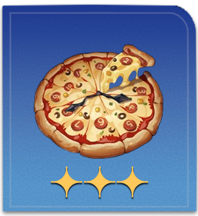
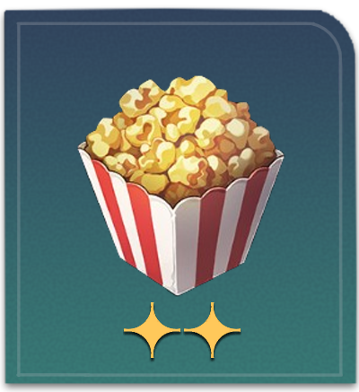

Menu
Dreamy Cone
Cost: 5000 credits
In-game effect: Upon use, increases all allies' ATK by 60% for the next battle. There is a small chance to select the wrong target when using abilities against enemy targets.
In-game description: What does the taste of a sweet dream resemble? This question lacks a definitive answer. Hence, Dreamy Cones were introduced with an initial offering of over twenty distinct flavors. However, as time passed, only three prominent flavors endured, each representing a popular scenario found in dreams.
"So, the three most popular scenarios are... memory loss, car crash, and terminal illness?"
Floatdisc Burger
Cost: 3600 credits
In-game effect: Upon use, Max HP of all allies increases by 14% plus an extra 360 for the next battle.
In-game description: This burger earns its name from the crunchy disc-shaped flaky chip nestled between the buns, and only a few individuals can consume it in a dignified way. In certain taverns, devouring a Floatdisc Burger without using your hands has become somewhat of a legendary challenge.
"Why is it that some Halovians always find fault with its appearance?"
Clockie Pizza

Cost: 3600 credits
In-game effect: Upon use, increases all allies' SPD by 16% but reduces their DMG by 8% for the next battle.
In-game description: Resembling a clock, this pizza is precisely divided into twelve equal-sized slices, making it the perfect food for parties.
"What is the meaning behind the unique shape of this food? Some believe it pays homage to a mysterious wealthy individual, while others see it as a reminder to cherish each passing moment."
Oak Cake Rolls

Cost: 3600 credits
In-game effect: Upon use, increases all allies' Break Effect by 45% for the next battle.
In-game description: Legend has it that poor inhabitants of border planets would add wood chips to their bread to satiate their hunger. Over time, this practice evolved into a peculiar tradition among aristocrats, symbolizing a "reverence" for the humble past. This product features a variety of botanical additives, closely resembling an oak branch in terms of both appearance and composition, and only the most ambitious and determined individuals can consume it.
"Politicians from the Oak Family take pride in eating it without flinching, for they believe it to be a formidable feat."
Classic Soulglad
Cost: 1800 credits
In-game effect: Upon use, increases all allies' ATK by 10% plus 120 ATK for the next battle.
In-game description: When it comes to SoulGlad, classic means the best. Despite three attempts to modify the formula, the SoulGlad company was compelled to return to the original recipe due to complaints from dissatisfied customers each time.
"Our double-blind tests show that over 70% of customers failed to discern the difference between the new formula and the original one."
Popcorn

Cost: 1800 credits
In-game effect: Upon use, increases all allies' Break Effect by 30% for the next battle.
In-game description: Under extreme temperature and pressure, the protein rice expands to an unprecedented level and then explodes with a "bang." Fluffy and tasty, this snack tastes perfect paired with any entertainment.
"Not a healthy food, but health is worthless in the face of pleasure."
Sliced Cake Stargazer
Cost: 1800 credits
In-game effect: Upon use, the target ally immediately regenerates 30% of their Energy.
In-game description: One of the most renowned snacks in Penacony. Outsiders often recall its distinctive shape but hesitate to taste its flavor.
"These fish heads gazing up the stars are trying to urge us to explore..."
"If you don't want to eat it, just say it."
Dreamlight - Mixed Sweets
Cost: 1800 credits
In-game effect: Upon use, all allies may consume or restore Energy or HP at the beginning of each turn for the next battle.
In-game description: A specialty candy of Penacony, each piece concealing a unique filling. Some compare it to life, as you will never know its taste until you try it yourself.
"This one is spicy!"